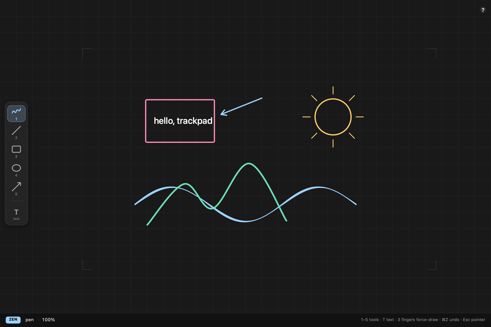
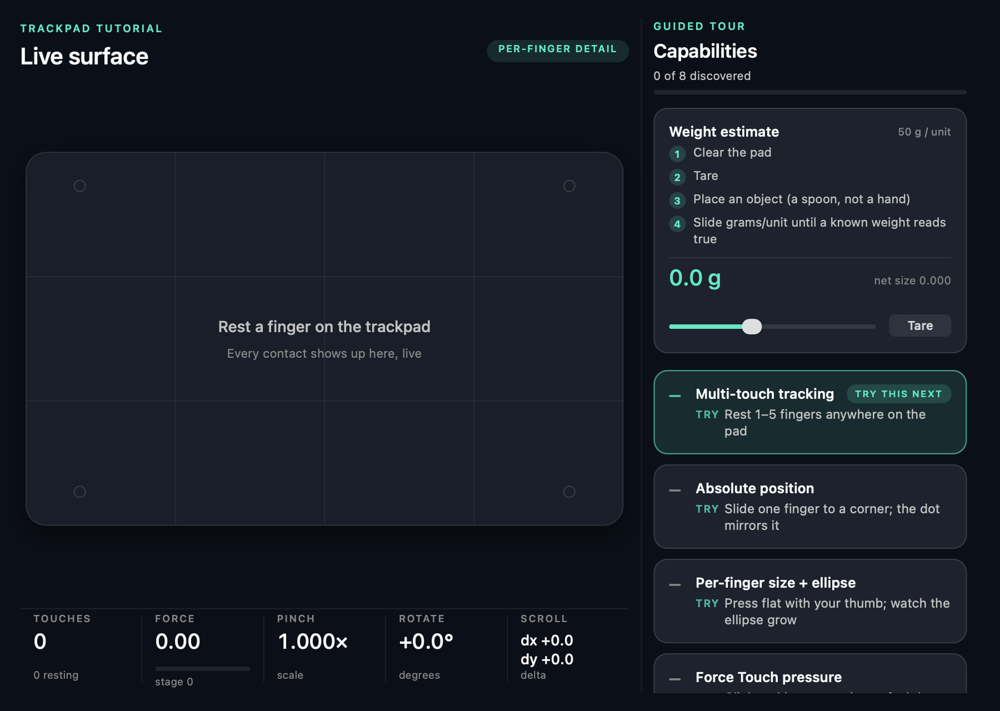

—Multi-touch tracking
Rest 1–5 fingers anywhere on the pad
macOS 13+ · Swift · AppKit · MIT
Trackpad Studio reads the raw multi-touch stream macOS keeps to itself: where every finger is, how hard it presses, how wide it lands. Draw at the exact spot your finger is touching — then poke around and find out what else the pad has been reporting all along.

The web only gets a mouse
This is the whole of what a browser receives from your trackpad: one point, no pressure, relative motion. Put a second finger down — the counter stays at 1.
macOS knows far more, and it hands that over only to native code: per-finger absolute coordinates from NSTouch, contact ellipses and capacitive size from a private framework, pressure from Force Touch. That gap is the entire reason this app exists.
mouse events · 1 contact max
Guided tour · 8 capabilities
The app ships a tutorial panel with one card per capability. Each stays dashed until you actually perform the gesture, then ticks over to ✓. Nothing is unlocked by reading.
Rest 1–5 fingers anywhere on the pad
Slide one finger to a corner; the dot mirrors it
Press flat with your thumb; watch the ellipse grow
Click and keep pressing; the bar fills past stage 1
Two fingers, in and out; the scale multiplies
Two fingers, turn; degrees accumulate
Two fingers, any direction; dx and dy stream in
Park a thumb and leave it; it is counted, not obeyed
Capacitive contact size grows with how hard something presses, so the pad can be talked into behaving like a very rough scale. Clear the pad, tare it, set a spoon down, then slide grams-per-unit until a known weight reads true. It is a party trick with a plausible number attached, not a kitchen scale.
Per-finger data needs Input Monitoring permission. Without it the app drops the size-based features and everything else keeps working.
On the board
The moment a finger lands, the system cursor is frozen and hidden, so drawing never drags focus across your desktop. It comes back the instant the last finger lifts, the window loses focus, or you press Esc.
A light touch is only a cursor. Press and the stroke thickens under your finger — Force Touch pressure drives the line weight directly.
Two fingers scale and move the canvas at the same time. Both are computed from the raw touch positions, which sidesteps macOS gesture exclusivity — you never have to pick one or the other.
Drop three fingers and the current tool commits a stroke without any pressure at all. The leftmost finger is the pen; the other two are just there to say you mean it.
Thumbs and palms parked on the pad render as ghost rings and are filtered out of every gesture calculation, so leaning on the trackpad does not throw your zoom around.
Keys 1–5 pick pen, line, rectangle, ellipse and arrow. T drops a text label that holds the same on-screen size however far you zoom in.

Live surface
Install
You need the Xcode command line tools with Swift 5.9 or newer. There are no prebuilt binaries yet, so the first run compiles from source.
Optional: the per-finger size, contact ellipse and weight card read from a private macOS framework, which needs Input Monitoring under System Settings → Privacy & Security. Skip it and the app still runs — those three cards simply report themselves unavailable.
Questions
A browser sees your trackpad as a mouse: one relative cursor, no matter how many fingers are down. Pinch shows up as a ctrl-wheel event, pressure only appears in Safari during a click, and per-finger position never appears at all. Absolute coordinates come from AppKit's NSTouch and contact size comes from a private macOS framework. There is no web equivalent to port.
Yes. Anything macOS reports as a multi-touch device works the same way — built-in or connected over Bluetooth.
It measures something real — capacitive contact size, which grows with pressure — but it is not a scale. With a tare and a calibration against a known weight you can get a believable number out of a light object. Enjoy it as a party trick and do not weigh your coffee beans with it.
Anything capacitive the pad registers will do — a knuckle, a touchscreen stylus tip. A wooden pencil is invisible to it.
No. The pointer is re-enabled when the last finger lifts, when the window stops being key, and when the view goes away. Never leaving a frozen cursor behind is a hard rule in the code.
Nothing. MIT licensed, source on GitHub, no account, no telemetry. If it made your afternoon better there is a coffee button below.